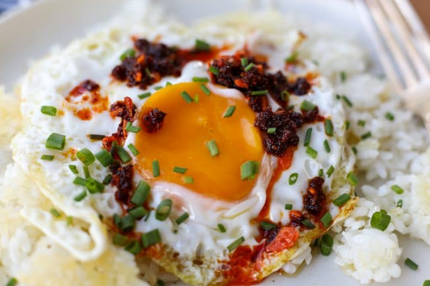

Lao Gan Ma Rice

Description
This recipe is for a super fast and easy rice dish. it involves only 4 ingredients and the longest step is cooking the rice which can be done ahead of time if needed.
Ingredients
- 1 cup white rice
- 1 egg
- 1.5 tsp Lao gan ma chilli oil
- spring onion (to garnish)
Steps
- Cook the rice according to the instructions on the packet.
- When the rice is almost done fry the egg.
- Once the rice and egg are cooked plate up with rice first, then chilli oil, then egg, and lastly sprinkle chopped spring onions on top